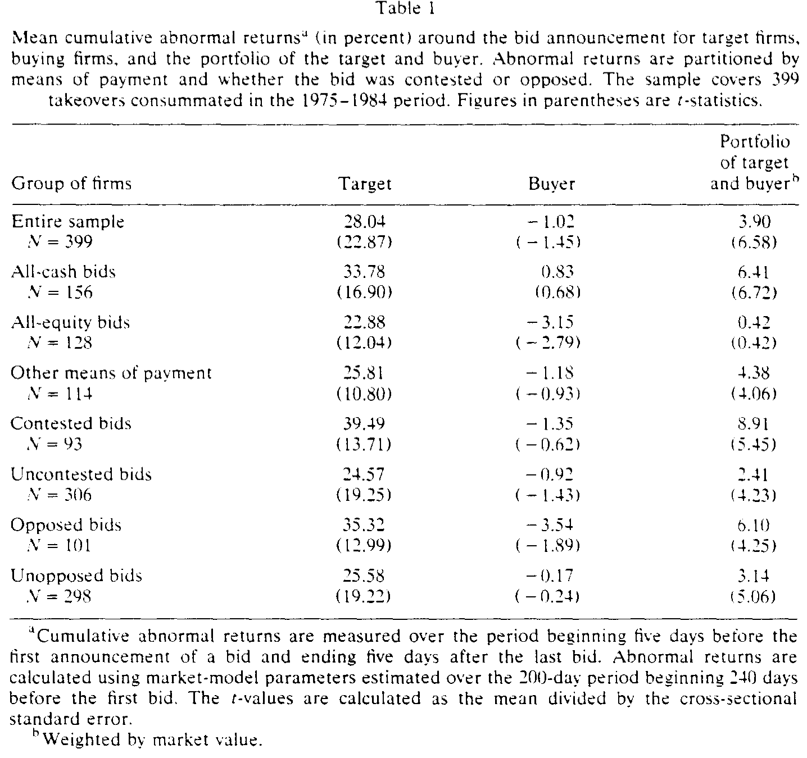
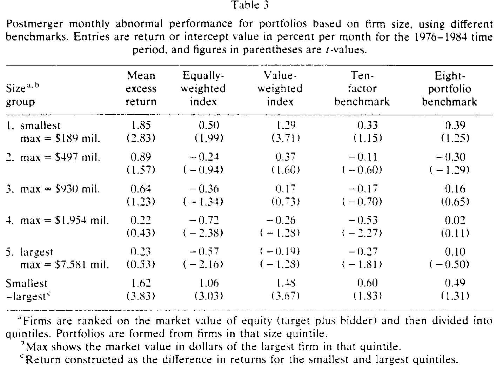
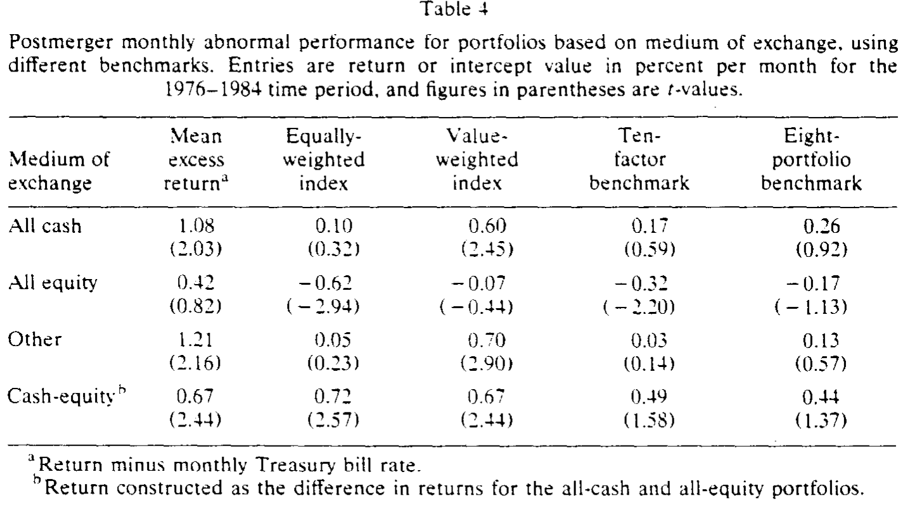
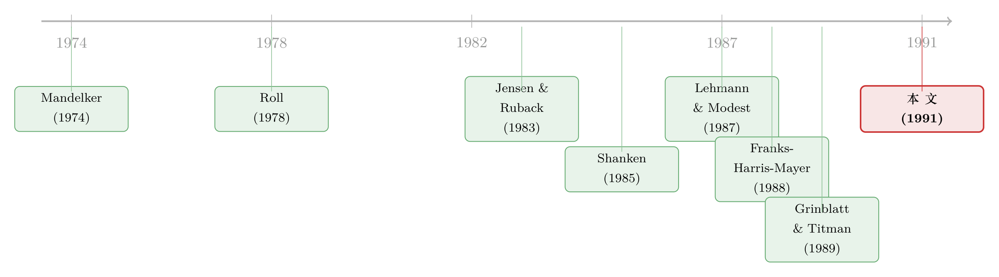

并购方跑输的那几年，错的不是公司，是尺子
本文读的是 Franks, Harris & Titman (1991, Journal of Financial Economics)：过去研究里「并购方在交易完成后长期跑输大盘」这一被反复用来质疑市场有效性的现象，很可能不是真的「定价错了」，而是用错了基准——一旦换上一个均值-方差有效的多因子基准（尤其是控制住了规模效应），那点长期负的异常收益就基本消失了。
1 一个「不该存在」的负收益
先把场景摆出来。
并购这件事，在公告日那一刻几乎总是「皆大欢喜」——目标公司股价大涨，合并后的组合价值净增。可吊诡的是，如果你把镜头往后拉长，盯着收购方在交易完成后的那几年，画面就变了：它的股票像是被人悄悄抽走了力气，慢慢跑输了市场。
这不是个别现象。Jensen 与 Ruback (1983) 综述了 7 项研究，结论是收购方在并购后 12 个月里平均录得 −5.5% 的异常收益 (abnormal return)。两位作者用了一个很重的词来形容它——「unsettling」（令人不安），因为它「与市场有效性不一致，并提示并购期间的股价变化高估了未来的合并收益」。换句话说：公告日那场狂欢，可能只是一厢情愿的乐观，事后会被现实一点点收回。
Franks、Harris、Mayer (1988) 用一个横跨三十年（1955–1985）、几乎囊括全部并购的美英大样本，同样捞出了并购后的负异常收益。Ruback (1988) 评论说，既然这个样本「几乎用了所有并购，选择性偏差的说法就不太站得住脚了」——于是矛头再次指向那个最刺激的解释：市场是无效的。
这就是张力所在。一边是公告日的正收益，一边是其后数年的负收益。如果两者都当真，那市场就是在系统性地犯错、又系统性地纠错。本文三位作者偏偏不信这套。他们想问的是一个朴素到有点扫兴的问题：
你说收购方「跑输」了——可你拿什么当标尺去量的？
2 真正的麻烦，藏在那把尺子里
接着，一个自然的问题是：什么叫「异常收益」？它从来不是绝对的，而是相对于某个基准组合算出来的超额部分。你用的基准变了，「异常」就变了。
而 Roll (1978) 早就敲过这记警钟：业绩衡量对基准的选择极度敏感，用一个非均值-方差有效的基准算出来的异常收益，根本没有意义。偏偏过去那些并购后业绩研究，用的几乎都是 CRSP 等权 (equally-weighted) 或市值加权 (value-weighted) 指数——而这两个指数早已被证明是无效的 [见 Shanken (1985)]。
更要命的是，这种无效性不是随机噪声，它有方向：这些基准算出来的异常收益，会系统地与公司规模和股利政策相关。于是问题来了——收购方往往是大公司（本文样本里，收购方平均是目标的 8 倍大）。一个充满「小公司溢价」的基准，会天然地把大公司判成「表现不佳」，哪怕它们其实干得不赖。
这正是全文的「一个核心」：所谓并购后的长期负收益，很可能只是「大公司 + 坏尺子」这道算术题的副产品，而不是市场对并购的定价错误。
（关于「换一把尺子，结论就翻盘」这件事在资产定价里有多普遍，可参见《换一把尺子，一半的动量利润就消失了》；而「输家会不会翻身」之争同样栽在基准上，见《「输家会翻身」这件事，究竟是市场犯傻，还是我们量错了风险？》。）
3 识别策略：四把尺子的对质
那么，怎样的尺子才靠得住？
本文借的是组合业绩评价 (portfolio performance evaluation) 文献里的工具：Jensen 测度——把投资策略的超额收益，对一个事前均值-方差有效的基准组合的超额收益做回归，回归的截距就是异常表现的度量 [见 Grinblatt & Titman (1989b)]。直觉很简单：如果基准是有效的，那么任何「被动」的、组合不随时间变化的策略，都不该跑出非零的截距。一旦截距显著非零，矛头才真正指向市场对并购的最初判断。
具体地，对每家收购方 \(j\)，先把月度收益减去一个月期美国国债收益率，得到超额收益：
$$ r^*_{jt} = r_{jt} - rf_t $$
再在并购后 36 个月窗口内做如下回归（这是全文方法论的心脏）：
关键在于 \(N\)——你往里塞几个基准组合。本文一口气摆了四把尺子对质：
- 两把单因子：CRSP 等权指数、CRSP 市值加权指数（\(N=1\)，也就是传统做法）；
- 一把十因子：Lehmann & Modest (1987) 用 750 只证券做极大似然因子分析得到的基准；
- 一把八组合：Grinblatt & Titman (1988, 1989a) 专为评价共同基金而构造的基准——由 4 个规模组合、3 个股利率组合、1 个过往收益组合等权拼成，就是冲着消除传统基准的已知偏误去的。作者在文中明确表示，重点放在八组合基准上，其余三把主要用来对照。
为了不让结论被「事后选择偏差」(ex post selection bias) 和横截面相关性绊倒，作者还做了第二套检验：日历时间组合。从 1976 年 1 月起，每个月把「过去 36 个月内完成过并购的所有公司」等权打包成一个组合，逐月调仓（新并购的进、满 36 个月的出），再拿这个组合的超额收益去回归四把基准。事件时间法（346 家、要求至少 18 个月数据）与日历时间法（399 家）结果高度一致，说明上述统计隐患影响不大。作者因此以日历时间结果为主。
4 数据
- 样本：399 起由 NYSE / AMEX 公司发起的并购，区间 1975 年 1 月至 1984 年 12 月。
- 筛选：目标须为 NYSE / AMEX 公司；收购方须有 CRSP 股价数据；竞购日期可在《华尔街日报索引》(WSJI) 中查到。
- 关键日期：以最终竞购方的最后一次出价日为基准（事件起点为其后一个月，以避开最后竞购月里的股价反应）。
- 配套信息：支付方式（现金/股票/其他，取自 Capital Changes Reporter）、是否竞争性出价 (contested)、是否遭抵制 (opposed)、目标与收购方的市值等。
先看一眼公告日，确认样本与既有文献一致。如表 1 所示，全样本里目标公司平均获得约 29.04% 的公告期累计异常收益（\(t=22.87\)），收购方则是不显著的 −1.02%（\(t=-1.45\)）——没赚，但也谈不上显著亏损；而按市值加权的「目标+收购方」组合录得 +3.90%（\(t=6.58\)），说明从总价值看，并购在公告日是创造价值的。值得注意的是，全股票支付的收购方公告收益为 −3.15%（\(t=-2.79\)），显著为负，这与 Franks-Harris-Mayer (1988)、Travlos (1987) 一致，通常被解读为市场对收购方「在位资产」(assets-in-place) 的向下重估。

Table 1
5 主要结果：尺子一换，「异象」就蒸发了
然后，真正关键的一步来了。
第一击：四把尺子，四个结论。 用日历时间组合估出来的并购后月度异常表现，随基准不同而剧烈摇摆：市值加权指数给出显著为正的 +0.37%/月（约 0.3% 以上），等权指数却给出约 −0.23%/月——两者符号相反、且彼此统计上显著不同！而十因子基准给出 −0.08%/月，八组合基准给出 +0.05%/月，\(t\) 值仅 0.46。也就是说，那把被精心校准过的八组合尺子，量出来的并购后异常收益与零无异。
两个「权威」的市场指数，对同一批并购给出了符号相反的判决。这本身就说明：所谓「并购后异常收益」，至少有一半是基准在说话，而不是公司在说话。
第二击：罪魁是规模。 为了揪出基准之间分歧的根源，作者把收购方按并购后市值分成五组。如表 3 所示，最小的一组比最大的一组，月度超额收益高出约 1.6%——这就是教科书里的「规模效应」。等权与市值加权基准压不住这个规模差（最小减最大的异常收益分别仍有 1.06% 和 1.48%/月，显著为正），所以它们才会把以大公司为主的收购方系统性地判成「跑输」。十因子基准吸收了大部分规模偏误；而八组合基准下，没有任何一组呈现显著非零的表现（最小减最大仅 0.19%/月，不显著）。结论顺理成章：先前用前两把尺子量出的「非零并购后表现」，多半是众所周知的规模偏误，而非收购方真实的好坏。

Table 3
（这一点与《赚了 1.1%，却亏掉 3030 亿：并购里那个被「平均」藏起来的规模效应》遥相呼应——规模这个变量，在并购研究里几乎是个甩不掉的幽灵。）
第三击：连「支付方式」的异象也跟着退场。 既然全股票支付的收购方在公告日就显著为负，Franks-Harris-Mayer (1988) 又报告过它们在并购后两年仍有负异常收益，那这里岂不是藏着一条「卖空全股票收购方」的交易规则？作者按支付方式分组检验（表 4）：用等权/市值加权基准，全股票收购方确实比全现金收购方差约 0.7%/月，统计显著；可一旦换上两把多因子尺子，这个差距虽仍有 0.4%/月以上，却不再统计显著了。八组合基准下，全股票组的异常表现为 −0.17%/月（\(t=-1.13\)），全现金组为 +0.16%/月（\(t=0.91\)），都说不上异常。那条诱人的交易规则，也就没了着落。

Table 4
一路打下来，三位作者的落点干净利落：先前关于并购后业绩不佳的发现，更可能源自基准误差，而非并购当时的定价错误。 平均而言，市场在公告日就已经把并购对收购方的影响定价对了；后面那几年的「负收益」，是尺子歪了。
6 文献脉络
把这条线索捋一捋。
最早，Mandelker (1974) 就用「合并公司」的风险-收益视角，并以组合方法检验并购后表现，奠定了「拿业绩评价工具看并购」的传统。Langetieg (1978) 则尝试用三因子（行业+市场）指数衡量并购后超额收益——但他假定合并后公司与整个行业「同质」，而收购方通常比同行业平均更大，这个假定几乎必然被违背（本文正是对规模做了显式控制）。
与此同时，业绩评价文献自己也在「磨尺子」：Roll (1978) 指出基准选择对业绩衡量的决定性影响，宣判了无效基准下的结论无意义；Shanken (1985) 进一步揭示传统指数的无效性；Grinblatt & Titman (1988, 1989a, 1989b) 与 Lehmann & Modest (1987) 则相继造出多因子/多组合的有效基准，为「重新量一遍」提供了武器。
另一边，并购实证的「负收益」证据在累积：Jensen & Ruback (1983) 把 −5.5% 写进综述并称之「令人不安」，Franks-Harris-Mayer (1988) 用超大样本再次确认。本文恰好站在这两条线的交汇处——拿业绩评价文献最新磨好的尺子，去重审并购实证攒下的那笔「负收益」旧账，并给出「是尺子的错」这一翻案式答案。至于「市场为何会犯错」的备选解释，作者也顺手点了 Roll (1986) 的「自负假说」(hubris hypothesis) 与 Myers-Majluf (1984) 的融资-资产价值联系，作为理解支付方式效应的理论背景。

7 评论与延伸（Q&A + 研究方向）
(a) 几个可能的疑问
Q：这篇文章是说并购「不毁价值」吗？
不是。它只针对收购方并购后的长期股价表现这一项，说「看不出显著异常」。公告日收购方本身也没显著获益（−1.02%，不显著），价值增量主要落在目标公司身上、体现在组合 +3.9% 上。文章的主张是「市场当时就定价对了」，而非「并购创造了大量股东价值」。
Q：八组合基准凭什么比市值加权指数更可信？
因为它是为消除已知偏误而构造的，并经过了检验：Grinblatt-Titman 发现单因子、十因子等基准会让被动组合跑出显著非零表现，而八组合基准把这种「假异常」消掉了，且对样本子集、样本期与微小成分变动都稳健，连 37 个行业组合对它都不显著。它更接近一个事前均值-方差有效的基准——这正是 Jensen 测度成立的前提。
Q：用「最后竞购日」而非「完成日」作起点，会不会引入偏差？
作者正视了这点：若异常收益来自「确认不会再有竞购」而非「对合并价值的重估」，用最后竞购日可能有偏。但他们检查了最后竞购日之后头几个月的收益，发现与其后并无实质差异，且对总异常收益贡献不显著，因此判断这一选择不致带来明显偏差。
Q：横截面 \(t\) 检验会不会被高估？
会有这个隐患。文中坦言，横截面法忽略了收益的横截面相关性，可能让 \(t\) 值偏高；而事件时间下形成组合又可能诱发序列相关，时间序列 \(t\) 值同样可能偏高。这正是作者额外做日历时间组合检验的原因——两法结论一致，才更让人放心。
Q：那 Franks-Harris-Mayer (1988) 的负收益就是错的？
更准确地说，是「用对了数据、用错了尺子」。本文没有否认那些样本里测得了负数，而是论证：那个负数主要由规模偏误驱动；换上控制了规模的有效基准，它就不再显著。这是方法论层面的修正，不是数据层面的否定。
Q：这对「市场有效性」之争意味着什么？
它把天平往「有效」一侧推了一格：Jensen-Ruback 当年那句「unsettling」，至少有相当一部分可以归因于基准误差，而不必动用「市场系统性犯错」这个强假设。当然，这只是「无法拒绝有效」，不等于「证明了有效」。
(b) 几个可能的研究问题与提案
1. 把这套「换尺子」逻辑搬到公司债的并购后表现上。 【经济故事】并购改变收购方的杠杆与违约风险，债权人和股东的反应未必同向。股票上「看不出异常」，债券上是否也如此？信用利差的「异常」同样高度依赖基准（久期、评级、流动性）。 【可行性】中。需要 TRACE + Mergent FISD 的公司债成交与发行数据，以及匹配的并购样本；识别上可用「同发行人、同期限的可比债」做基准，难点是控制流动性与评级迁移。可做。
2. 外资持有人结构与并购后长期表现。 【经济故事】若外资是「追涨且赖着不走」的长期持有人，他们重仓的收购方在并购后或有不同的价格动态与流动性。这能检验「持有人类型」是否本身就是一个被基准漏掉的风险维度。 【可行性】中。需要 FactSet/13F 类机构持股 + 跨国持股数据，匹配并购事件；识别靠持股结构的外生变动（如指数纳入），偏弱但可设计。
3. 流动性调整后的并购后异常收益。 【经济故事】本文控制了规模与股利，却没把流动性作为单独的基准维度。大收购方的流动性特征与小公司迥异，会不会还有一块「流动性偏误」没被八组合吃掉？ 【可行性】高。在原框架里加一个流动性因子/组合即可，数据现成（Amihud、换手率），是低成本的直接扩展。
4. 用现代 staggered DiD 重做支付方式效应。 【经济故事】全现金 vs 全股票的差异，本文用分组对比；若把它放进交错处理的双重差分框架，能更干净地分离「支付方式」与「公司类型」的混淆。 【可行性】中。数据可得，但「支付方式」是公司自选、强内生，需要工具或情景外生冲击（如税法变动），识别是真正的难点。
8 参考文献
Franks, J., Harris, R., & Titman, S. (1991). The postmerger share-price performance of acquiring firms. Journal of Financial Economics 29(1), 81–96.
Franks, J., Harris, R., & Mayer, C. (1988). Means of payment in takeovers: Results for the United Kingdom and the United States. In A. Auerbach (Ed.), Corporate Takeovers: Causes and Consequences. University of Chicago Press.
Grinblatt, M., & Titman, S. (1989b). Portfolio performance evaluation: Old issues and new insights. Review of Financial Studies 2(3), 393–421.
Jensen, M. C., & Ruback, R. (1983). The market for corporate control: The scientific evidence. Journal of Financial Economics 11(1), 5–50.
Langetieg, T. (1978). An application of a three-factor performance index to measure stockholder gains from merger. Journal of Financial Economics 6(4), 365–384.
Lehmann, B., & Modest, D. (1987). Mutual fund performance evaluation: A comparison of benchmarks. Journal of Finance 42(2), 233–265.
Mandelker, G. (1974). Risk and return: The case of merging firms. Journal of Financial Economics 1(4), 303–335.
Myers, S., & Majluf, N. (1984). Corporate financing and investment decisions when firms have information that investors do not have. Journal of Financial Economics 13(2), 187–221.
Roll, R. (1978). Ambiguity when performance is measured by the security market line. Journal of Finance 33(4), 1051–1069.
Roll, R. (1986). The hubris hypothesis of corporate takeovers. Journal of Business 59(2), 197–216.
Shanken, J. (1985). Multivariate tests of the zero-beta CAPM. Journal of Financial Economics 14(3), 327–348.
Travlos, N. (1987). Corporate takeover bids, methods of payment, and bidding firm's stock returns. Journal of Finance 42(4), 943–963.